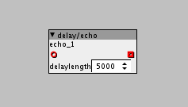

Hello, is there an object for simple delay line audio capable?
basically control input of delay setting in ms and audio input/output
I can't find something like this, or I'm not looking at the right spot.

Hello, is there an object for simple delay line audio capable?
basically control input of delay setting in ms and audio input/output
I can't find something like this, or I'm not looking at the right spot.
have a look at the various delay/* objects and also the related help patch.
the delay line is measured in samples, but given you know there are 48000 samples/sec easy to calc
the delay table has to be fixed in size, for compilation, so you can consider it as the 'max time' allowed, then you can use delay/read to get fractions of that size.
I'm sure there are probably community objects which hide this, but it is worth getting familiar with these concepts at a low level, so you can learn to patch you own 'variations'... lots of fun here to be had creating your own delays/reverbs/chorus with a bit of basic knowledege
thank you! I understood that after watching some examples that but I don't get how I can connect some other object to interact with delay length, on the one I want to use the delay is only selectable via box

delay/echo is only for a simple delay, with a fixed delay time.
what you want is delay/write and delay/read...
delay/write you use to name create the delay line (with a maximum size), send in the signal you wish to delay.
delay/read (there are variations) the outlet is the delayed signal, the inlet is where to read from in the delay line, as a 'percentage'
e.g. if you take the delay/read with the blue inlet (control rate), if you pass in 32, (i.e. half a dial) it will read from 50% of the delay line, so if in delay write you have 512 samples, 50% is 256 samples.
obviously, msec can be calculated, as you know there are 48k samples/sec... and as the buffer is fixed in size, you can calculate what percentage of the buffer is required for a given delay time.
I'd guess, at this point, your thinking this is more complex than it needs to be... and yes, it kind of is, but that's because these are fundamental building blocks, from which you can build all sorts of effects, as I said its worth getting used to these...
but, I'm sure someone has wrapped these into something easier to use in the community library for the final use.
Thanks! I'll look into it!
I'm trying to work on some VHS effect as submitted here The VHS Challenge
Hello @thetechnobear, I'm getting some artefact when using the delay. Maybe I'm doing something wrong. I'm trying to get slow wobbles and fluttering.
woble.axs (11.2 KB)